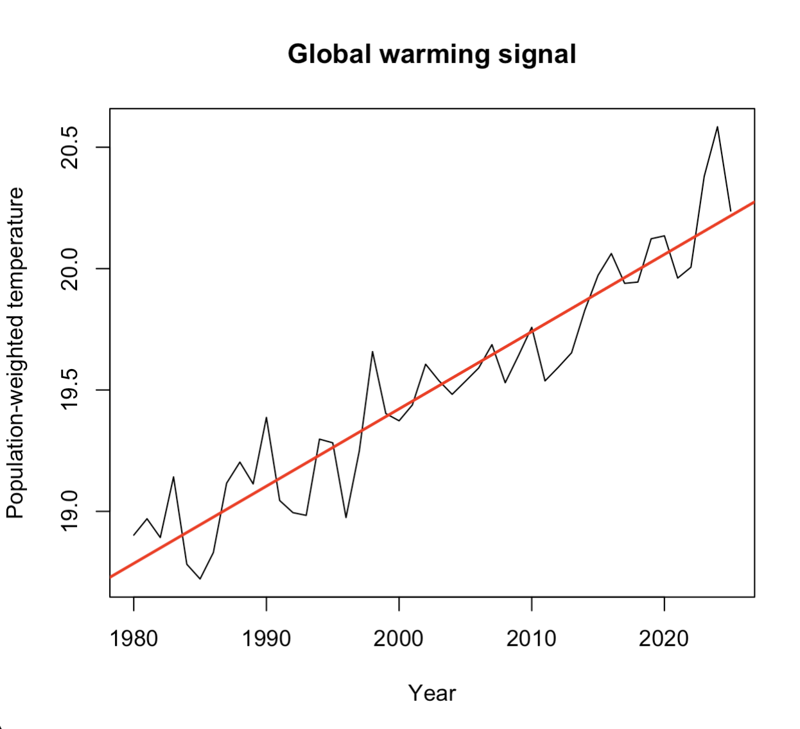
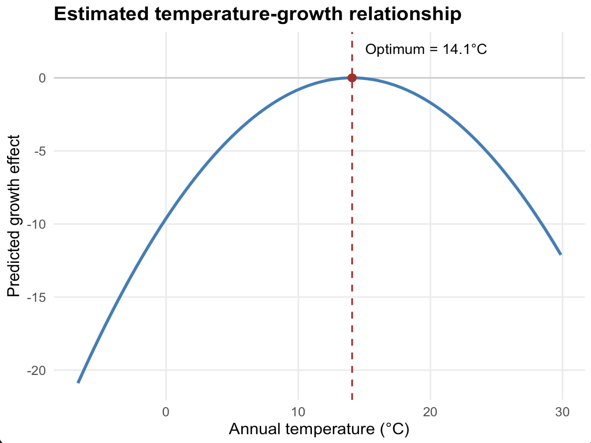

Spatial Data Analysis
Applied spatial workflows
Sant’Anna School of Advanced Studies
Matteo Coronese
June 2026
What will we learn in this course?
Lecture 1 - Spatial data basics
Lecture 2 — Operating with spatial datasets
Lecture 3 — Elements of spatial dependence and econometrics
Lecture 4 — Applied spatial workflows
Exposure variables
Temporal and spatial harmonization
Raster-vector interactions
Panel construction
Climate econometrics
First things first: get the data!
Go to https://l1nk.dev/tvfd8zx
From global rasters to econometric panels
Working with spatial data often requires much more than simply fitting a regression model.
Researchers routinely need to:
combine multiple spatial datasets;
harmonize different grids and resolutions;
aggregate information over administrative units;
define meaningful weighting schemes;
construct variables suitable for statistical analysis.
The exact workflow depends on the research question, but these operations appear repeatedly across many disciplines.
One of the most common tasks is the construction of an exposure variable .
What is an exposure variable?
An exposure variable quantifies how much an observational unit is exposed to a spatial phenomenon.
Examples:
Country
Temperature
Population-weighted temperature
Municipality
PM2.5
Population exposure to pollution
Household
Flood hazard
Flood risk
Region
Transport infrastructure
Market accessibility
Exposure variables are rarely directly observed.
Instead, they are constructed by combining spatial information with aggregation rules and weighting schemes.
Case study: Burke, Hsiang & Miguel (Nature , 2015)
A highly influential paper in climate economics that uses spatial data to estimate the effect of temperature on economic growth.
A general workflow
workflow
era5
ERA5 monthly
climate
annual
Annual
aggregation
era5->annual
pop
Population
rasters
interp
Temporal
interpolation
pop->interp
countries
Country
polygons
extract
Raster-vector
exact_extract()
countries->extract
align
Grid
harmonization
annual->align
interp->align
weight
Population
weighting
align->weight
weight->extract
exposure
Country-year
exposure
extract->exposure
panel
Panel
dataset
exposure->panel
gdp
World Bank
GDP
gdp->panel
twfe
TWFE
regression
panel->twfe
Climate is only one application: the same workflow can be used to study pollution, accessibility, flood risk, or habitat loss.
The analytical choices made during construction can strongly influence scientific conclusions.
Goal of today’s lecture: transform raw spatial data into scientific inference .
ERA5 climate data
We start from ERA5 reanalysis data, the gold standard in modern climate analysis.
We focus on data on temperature and precipitation.
Load temp.tif and prec.tif. Function rast()
Inspect the raster: crs(), res(), extent(), names().
What CRS are we using? What is the spatial resolution? What is the temporal resolution, since data is covering 1980-2025?
Names are cryptic…
names (temp) <- as.POSIXct (as.numeric (sub (".*=" , "" , names (temp))),origin = "1970-01-01" ,tz = "UTC" to have nicer names.
Climate units matter
Inspect the first monthly layer: use global() with min and max
global (temp[[1 ]], c ("min" , "max" ), na.rm = TRUE )
What’s the unit for temperature?
global (prec[[1 ]], c ("min" , "max" ), na.rm = TRUE )
Does the maximum look reasonable?
Aggregate temperature over time
To aggregate over time, you can use the function tapp
tapp (#the raster object #a grouping vector, the same length as nlyr(rast) #aggregating function You can retrieve the years vector using the lubridate function
<- format (as.Date (names (temp)),"%Y"
Should annual temperature be computed trough a mean or a sum?
<- tapp (#compute month totals #over years #average across months
Aggregate precipitation over time
Temperature and precipitation behave differently.
Temperature
Intensive
?
Precipitation
Extensive
?
Should we use sum() or mean()? Should we multiply our values by something before aggregating?
<- days_in_month (as.Date (names (prec))
<- tapp (* days, #compute month totals #over years #sum over months * 1000 #transform into mm
Sanity checks
Inspect the new rasters temp_year and temp_year by computing min, mean and max through global():
Temperature: roughly between -50°C and +40°C
Precipitation: it is measured in mm now…
Plot random years: Can you recognize: deserts, mountain ranges, tropical regions?
global (temp_year, c ("min" , "mean" , "max" ))global (prec_year, c ("min" , "mean" , "max" ))plot (temp_year[[1 ]])title ("ERA5 Temperature, 1980" )plot (prec_year[[1 ]])title ("ERA5 Precipitation, 1980" )
Better be safe than sorry… Never trust transformations without checking the output.
Population data
“If a tree falls in a forest and no one is around to hear it, does it make a sound?”
People tend to concentrate in cities, valleys, and coastal areas. For economic analysis, we only care about climate experienced by people (e.g. we don’t care how hot is in a desert).
To account for this, we also need information on where people live.
Data source is Gridded Population of the World (GPW v4, NASA), for 2000, 2005, 2010, 2015, 2020.
<- rast ("data/gpw_v4_population_count_adjusted_to_2015_unwpp_country_totals_rev11_2000_2pt5_min.tif" <- rast ("data/gpw_v4_population_count_adjusted_to_2015_unwpp_country_totals_rev11_2005_2pt5_min.tif" #... <- rast (list (names (pop) <- c ("2000" , "2005" , "2010" , "2015" , "2020" )
Sanity check: Does the population raster make sense?
Inspect the raster:
Question:
Can we recover world population totals?
Expected values:
2000 ≈ 6.1 billion
2005 ≈ 6.5 billion
2010 ≈ 6.9 billion
2015 ≈ 7.3 billion
2020 ≈ 7.8 billion
global (pop, "sum" , na.rm = TRUE ) / 1e9
Temporal harmonization
We need climate and population rasters to talk to each other.
The GPW dataset provides population counts for 2000, 2005, 2010, 2015, 2020.
Climate data are annual: 1980 … 2025.
We assume that population changes linearly over time.
Our strategy:
1980–1999 → use 2000 population
2000–2020 → linear interpolation
2021–2025 → use 2020 population
Construct a raster for population in 2003 manually.
<- 0.4 * pop[["2000" ]] + 0.6 * pop[["2005" ]]
–
Build a general interpolation function
Let’s automate, building a custom function
<- function (year, rast){if (year <= 2000 ) # before 2000: use 2000 population return (rast[["2000" ]])if (year >= 2020 ) # after 2020: use 2020 population return (rast[["2020" ]])<- floor (year / 5 ) * 5 # lower and upper benchmark years <- y0 + 5 <- # interpolation weight - y0) / - y0)1 - weight_next) * # linear interpolation as.character (y0)]] + * as.character (y1)]]Test the function applying it to 2003 and use identical() to check if it is equal to pop2003
<- interp_rast (2003 , pop)identical (test, pop2003)
Compute all years
Build a vector years with the input variable (1980:2025)
Use lapply to apply the function to every year
<- lapply (rast = pop
Inspect the object with class() and length()
class (pop_yearly)length (pop_yearly)class (pop_yearly[[1 ]])
Why is the result a LIST? Because each element is a raster.
Stack everything into a single raster object
<- rast (pop_yearly)
Fix the names of the layers
names (pop_yearly) <- years
Reinspect the object. How many layers do you expect?
class (pop_yearly)nlyr (pop_yearly)
Perform a sanity check: compute global population by year
global (pop_yearly, "sum" , na.rm = TRUE ) / 1e9
Under which circumstances using 2000 population for 1980–1999 is potentially problematic?
Spatial harmonization
Climate and socio-economic data rarely share the same grid.
Before combining rasters, we must answer two questions:
Do they have the same resolution ?
Are their cells aligned in space?
Let’s start with resolution. Compare climate and population rasters using res(). What differences do you observe?
res (prec_year)res (pop_yearly)
Compute the ratio: how many cells from pop_yearly fit into a cell from prec_year?
res (prec_year)/ res (pop_yearly)
Aggregating smaller raster
The empirical bottleneck is always given by the coarser dataset.
aggregate (#raster object fact = n, #factor of aggregation fun = "fun" , #aggregating function na.rm = TRUE #options
<- aggregate (fact = 6 ,fun = "sum" ,na.rm = TRUE
Sanity checks. Check the resolution of pop_15. Compare annual global population between pop_15 and pop_yearly.
res (pop_15)global (pop_15, "sum" , na.rm = TRUE ) / 1e9 global (pop_yearly, "sum" , na.rm = TRUE ) / 1e9
Spatial harmonization: alignin grids
Our rasters now share the same resolution. But are they aligned ?
Check using ext() and origin().
ext (pop_15)ext (prec_year)origin (pop_15)origin (prec_year)
The two rasters are misaligned both vertically and horizontally by half cell.
Spatial interpolation
A common fix to this problem is to interpolate values on one grid relative to the position of each cell in another grid .
Among many methods, we are going to use the bilinear interpolation. We assign to each cell the average of the four nearest cells,
Use the command resample. Sintax:
resample (method = "bilinear"
<- resample (method = "bilinear"
Sanity checks
Geometries should now match. Check with compareGeom.
World population totals should remain approximately unchanged.
compareGeom ( pop_era5, prec_year, stopOnError = FALSE )global (pop_era5, "sum" , na.rm = TRUE ) / 1e9
From rasters to countries
Until now we worked with rasters.
However, econometric analysis is often performed at the country level.
We therefore need country polygons to aggregate raster information.
First, download country polygons:
<- rnaturalearth:: ne_countries (scale = "medium" ,returnclass = "sf"
Use st_crs and crs to check compatibility
Use plot() and plot(., add=TRUE) to have visual overlay confirmation
st_crs (countries)crs (temp_year)plot (prec_year[[1 ]])plot (st_geometry (countries), add = TRUE )
Zonal statistics and exact extraction
We now want to aggregate raster values over polygons. This operation is known as zonal statistics .
Cells intersecting country borders are only partially counted. Through exact extraction, boundary cells contribute proportionally to their covered area.
exact_extract (#aggregating function
Further weighting: population weighting
We are not simply using zonal statistic, but a weighted (by population) version of it. A hot desert and a large city should not contribute equally.
Population-weighted temperature is defined as:
\[
T^{PW} =
\frac{\sum_i T_i \times Pop_i}
{\sum_i Pop_i}
\]
where (i) indexes raster cells.
First compute the denominator \(T_i \times Pop_i\) for every raster cell:
<- temp_year * pop_era5<- prec_year * pop_era5
Then, extract them and the denominator (pop_era5) using exact_exctract(). Which aggregating function should we use?
<- exact_extract ("sum" <- exact_extract ("sum" <- exact_extract ("sum"
Further weighting: population weighting II
At this point, simply build the weighted measures conmputing the ratios
<- temp_num / pop_den<- prec_num / pop_den
Sanity check: check dimensions with dim() and inspect values with summary()
dim (temp_pw)dim (prec_pw)summary (as.matrix (temp_pw))summary (as.matrix (prec_pw))

Is this evidence of climate change? Of course a bit, but not necessarily: population weights also evolve over time.
Housekeeping
<- ! apply (is.na (temp_pw), 1 , all)<- countries[keep, ]<- temp_pw[keep, ]<- prec_pw[keep, ]<- as.data.frame (temp_pw)<- as.data.frame (prec_pw)<- 1980 : 2025 names (temp_df) <- paste0 ("temp_" , years)names (prec_df) <- paste0 ("prec_" , years)
Use the command cbind to attach temp_df and prec_df columns to countries
%>% st_drop_geometry () %>% transmute (iso3 = adm0_a3, #we call the identifies iso3 country = name %>% bind_cols (
For most econometric software, you need data in long format. Inspect the names of you columns and use pivot_longer()
names (panel_wide)<- panel_wide %>% pivot_longer (cols = - c (iso3, country),names_to = c (".value" , "year" ),names_sep = "_" %>% mutate (year = as.integer (year)
Economic data
-vNow, we only need GDP data. Dowload it from the World Bank repository:
<- WDI:: WDI (country = "all" ,indicator = "NY.GDP.PCAP.PP.KD" ,start = 1980 ,end = 2025
Perform a left_join() with you object panel
<- panel %>% left_join (%>% select (iso3c, year, NY.GDP.PCAP.PP.KD),by = c ("iso3" = "iso3c" , "year" )
Use filter() to remove observations without GDP information
<- panel %>% filter (! is.na (NY.GDP.PCAP.PP.KD)
Use group_by() and mutate() to compute the rate of growth of GDP:
<- panel %>% arrange (%>% group_by (iso3) %>% mutate (growth = 100 * (log (NY.GDP.PCAP.PP.KD) - lag (log (NY.GDP.PCAP.PP.KD))%>% ungroup ()
Sanity checks: are these growth rates reasonable? Use summary()
summary (panel$ growth)quantile ($ growth,probs = c (.01 , .05 , .5 , .95 , .99 ),na.rm = TRUE
Why a quadratic specification?
Now we have built our panel with exposure variables. In Burke, Hsiang & Miguel (2015), the question is:
Does temperature affect economic growth?
They further argue that such relationship is non-linear.
A simple way to capture this idea is:
\[
\text{growth} =
\beta_1 T +
\beta_2 T^2
\]
Why growth?
Which sign would you expect for \(\beta_2\) ?
If \((\beta_2 < 0)\) , the relationship is hump-shaped. Temperature can increase growth up to a point, and reduce it afterwards.
Empirical specification
\[
g_{it}
=
\beta_1 T_{it}
+
\beta_2 T_{it}^2
+
\beta_3 P_{it}
+
\beta_4 P_{it}^2
+
\alpha_i
+
\lambda_t
+
\delta_i t
+
\gamma_i t^2
+
\varepsilon_{it}
\]
where:
\(g_{it}\) : GDP per capita growth\(T_{it}\) : temperature exposure\(P_{it}\) : precipitation exposure
Why country fixed effects \((\alpha_i)\) ?
To absorb time-invariant country characteristics:
geography;
institutions;
culture;
average climate.
Why year fixed effects \((\lambda_t)\) ?
To absorb global shocks affecting all countries:
oil crises;
business cycles;
technological change.
Why country-specific trends \((\delta_i t + \gamma_i t^2)\) ?
To remove slow-moving country-specific processes.
economic convergence;
demographic transition;
institutional reforms.
We allow each country to follow its own smooth trajectory.
Where does identification come from?
After all these controls, the model is identified from:
year-to-year climate fluctuations within a country
We are not comparing:
Italy vs Norway
Brazil vs Sweden
We are comparing:
Italy in warmer years vs cooler years
Brazil in warmer years vs cooler years
while controlling for long-run trends and global shocks.
Estimating the model
Use feols() to estimate the Burke specification.
General syntax:
feols (~ x1 + x2 + ... | + fe_2,data = data,cluster = ~ unitFor this exercise:
dependent variable: growth
climate variables: temp, temp^2, prec, prec^2
country fixed effects: iso3
year fixed effects: year
cluster variable: iso3
To include country-specific polynomial trends, use:
which estimates, for each country, \(\alpha_i + \delta_i t + \gamma_i t^2\)
<- feols (~ temp + I (temp^ 2 ) + + I (prec^ 2 ) | + I (t^ 2 )] + year,data = panel,cluster = ~ iso3
Why include precipitation?
Why include quadratic terms?
Why cluster standard errors by country?
Use coef() to retrieve estimated coefficients and compute the vertex of the parabola (\(v=-\beta1_/(2\beta_2)\) ).
Is the estimated optimum close to the original ~13°?
- coef (m1)["temp" ]/ (2 * coef (m1)["I(I(temp^2))" ])
Winsorizing - Extreme growth episodes
Iraq 1991 (war); Equatorial Guinea 1997 (oil discovery).
Other possible outliers from political collapses, measurement errors.
Why are outliers potentially problematic?
OLS squares residuals. Large observations therefore receive disproportionate weight.
Our specification also contains quadratic climate terms. Extreme observations may therefore have a strong influence on the estimated curve.
Solution: winsorize growth
<- panel %>% mutate (growth_w = pmax (pmin (growth, 15 ),- 15
<- feols (~ temp + I (temp^ 2 ) + + I (prec^ 2 ) | + I (t^ 2 ) ] + year,data = panel2,cluster = ~ iso3
